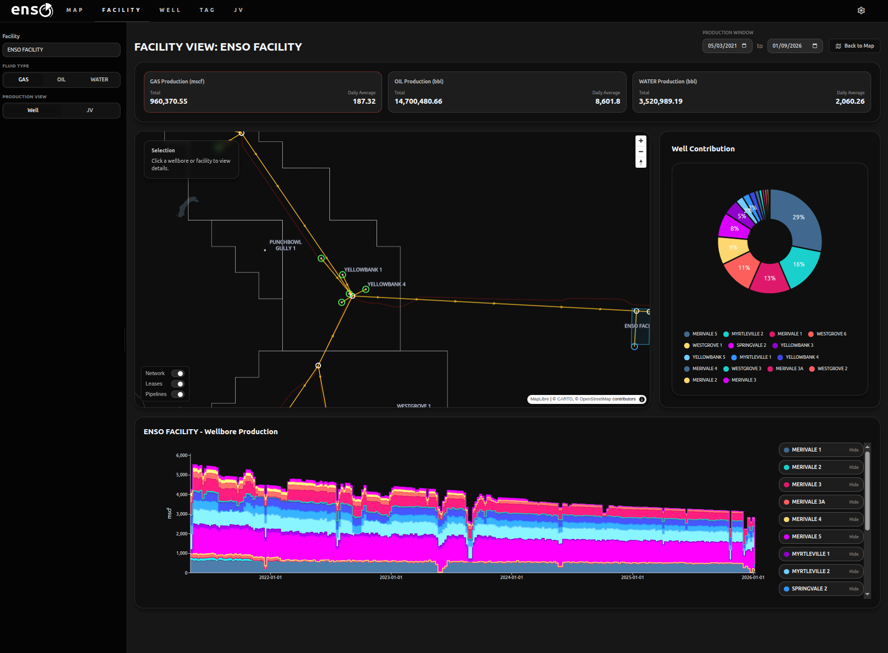

flowchart TD
DB[(Database)] --> SS[Spreadsheet data copy]
SS --> ENG[Engineers run calculations] --> SS
SS --> SP[SharePoint]
SP -.-> DB
Motivations
Something my career has taught me so far is that in this industry, behind most data processes is an Excel spreadsheet that everyone is afraid of. There might be a database system in place, but a lack of user awareness and comfort with interacting with it (or a lockdown on that interaction via heavy handed data governance) means that we often go hide in our spreadsheets instead.
But this has some… consequences.
He sees #VALUE, breathes out slowly… and clicks

=IF(AND($B$2<>"",OR(C3>0,D4="",E5<>F6)),SUMPRODUCT(($G$2:$G$17+H$2:H$17)*(IFERROR($I$2:$I$17,0)+IF(J$2 … it goes on for some time.“Who did this?” He asks himself, “What madman did this to us??”
And then he remembers.
“… I did.”
The failure is in two silos that don’t really understand one another. The data team lacks the domain specificity to handle and present the data in the most useful way for the engineers, and the engineers have little to no experience interacting with databases.
Engineers might view the database as a thing in the background that just… stores data. The data team knows that isn’t the case, but doesn’t have the domain expertise to really flex its capabilities.
This creates a system of hand-pumps. Data is handed to engineers in spreadsheets, they do their calculations, and then (if the data team is lucky) they hand the data back for database storage… or they just store it on SharePoint, leaving the database as a forgotten afterthought. They have the data they need, after all.
It looks something like this:
or worse:
flowchart TD
DB[(Database)] --> SS1[Spreadsheet data copy]
SS1 --> EMAIL[Data sent via email]
EMAIL --> SS2[Spreadsheet data copy]
SS2 --> ENG[Engineers run calculations] --> SS2
SS2 --> SP[SharePoint]
SP -.-> DB
This is simplified example, but the cracks are already showing:
- Data is being replicated in at least 3 places (likely more as new versions of that SharePoint sheet start piling up)
- The end data is materialized with no logical connection to how it was generated. The spreadsheet contains the logic, so even if the database receives the data, it knows nothing about how it was created.
This is what I mean by a hand-pumped system. When data is updated or inserted into the database (every day, we’re talking about a production system here), all downstream processes require manual-handling to keep downstream numbers in sync. If bad data entered the system six month ago? Have fun correcting it.
…Oh? You already corrected it, but the data never made it back into the database?
“Yeah, the database is totally wrong most of the time… we don’t really use it anymore.”
Got it.
The engineers have the logic they need locked down – that spreadsheet is probably a (somewhat terrifying) work of art. The problem isn’t the logic, but where it is stored and executed.
Data hand-pumps don’t scale, are expensive and failure-prone. What companies need are data pipelines:
flowchart TD
RAW[(Database)] --> CALC[Database runs calculations]
CALC --> SS[Spreadsheet]
In this system, the spreadsheet is a database artifact, not a store of data. The spreadsheet is disposable. Those “database calculations” are a series of deterministic computations executed on demand when data requested.
That means data cannot be “out of sync”, the system doesn’t allow it.
This sounds nice, but the reality of data flowing through an oil and gas company is a lot more complicated than the diagram above makes it appear. Meter data, operational data, production allocation, losses and efficiency, JV share calculations, regulatory compliance, reportable KPIs, reserves, forecasts…
flowchart TD
MTR[Meter data] --> ALLOC[Production allocation]
MTRERR[Metering error corrections] -.-> MTR
OPS[Operational/Safety data] --> ALLOC
ALLOC --> LOSS[Production losses and efficiency]
ALLOC --> JV[JV share calculations]
LOSS --> KPI[Reportable KPIs]
COMM[Commercial data] ----> KPI
JV --> KPI
KPI --> REG[Regulatory compliance]
KPI --> SHARE[Shareholders]
OPS --> KPI
MTR --> KPI
… The list goes on, and you don’t want to hand-pump it.
But because production systems are complicated and require a detailed domain model and orchestration, these kinds of systems are usually packaged up and sold to companies for a lot of money.
Enso is our answer to this.
What is enso?

Enso is both a product and a platform technical showcase.
It is a product in the sense that it can be packaged up and sold, similar to competing offerings on the market (though significantly cheaper).
It is a showcase in the sense that it is a series of patterns that can be deployed internally at companies that want to customize and control their process.
The biggest pain points for off-the-shelf solutions are awkwardly fitting them into existing processes, and failing to integrate them effectively. Internal deployments allow the solution to be both customized to internal requirements, and also integrated into other systems so that data can flow between them automatically.
This integration piece is vital. The magic technology solving all your data problems is significantly less useful if the rest of your company still needs someone babysitting spreadsheets to serve data downstream. Pipelines, not hand-pumps.
How does enso work?
The two central pillars of enso are:
- Dynamic Graphs - because your production system forms an evolving, interconnected network
- GIS - because your production system has a geographic footprint, and that matters
More concretely, the production network is encoded as a Directed Acyclic Graph (DAG), where fluid flows follow the edge direction between nodes. Each node in that graph is geolocated, allowing you to put the network in its geographic context on a map. The network evolves as wells are connected, taken offline, or production is rerouted.
Why graphs?
Take the production allocation workload as an example.
Production allocation requires that sales point metering is allocated back to individual wellbores. It is a fundamental requirement for field modelling as it allows reservoir engineers to work with high accuracy estimates for how much each well is producing, and from which reservoirs in the subsurface production is coming from.
There are various ways to perform these allocations, but fundamentally they require an estimate of each wellbore’s “production potential” on a given day. The calculation of production potential in turn (regardless of the particular method used), requires:
- Identification of the set of wellbores connected to the downstream meter being allocated to
- A comparative measure, normalized across that set, to calculate the allocation factor of each wellbore
- Multiplication of the downstream meter value by the allocation factor for each wellbore
In principle, a very simple procedure.
For example, consider the following simple network:
flowchart TD
W1((Well A)) --> MAN[Manifold]
W2((Well B)) --> MAN
W3((Well C)) --> MAN
MAN --> COMP[Compressor]
COMP --> FM((Fiscal Meter))
Allocation on a given day could be performed by:
Spreadsheet
- Get wellbore meter data
- Use a VLOOKUP to find the fiscal meter each well is connected to
- Calculate allocated production
Database foreign keys
- Get the wellbore meter data
- JOIN on the fiscal meter based on the wellbore -> fiscal meter relationship
- Calculate allocated production
Graph
- Get the wellbore meter data
- Traverse the graph to find each well’s downstream fiscal meter
- Calculate allocated production
With such a simple network a spreadsheet performs fine. The graph implementation requires additional traversal logic, making it overkill for this example. But real production networks are much more complicated:
flowchart TD
W1((Oil A)) --> M1[Manifold A]
W2((Oil B)) --> M1
W3((Gas A)) ---> M2[Manifold B]
W4((Gas B)) ---> M2
W5((Gas C)) ---> M2
M1 --> SEP3[3-Phase Separator]
M2 --> SEP2[2-Phase Separator]
SEP3 ---> COMP[Compressor]
SEP2 --> COMP
COMP --> FLR((Gas Flare))
COMP --> FMGAS((Gas Fiscal Meter))
SEP3 ---> WD((Water Disposal))
SEP2 ---> WD((Water Disposal))
SEP3 ---> PUMP[Export Pump]
PUMP --> FMOIL((Oil Fiscal Meter))
This is where the graph representation of the network clearly pulls ahead. There are now 4 terminal nodes (the oil fiscal meter, gas fiscal meter, gas flare, and water disposal) that all need to be accounted for to properly calculate the allocated production for each well, instead of the single fiscal meter in the previous example.
The graph traversal logic resolves all of these relationships for us:
flowchart TD
FLR((Gas Flare))
FMGAS((Gas Fiscal Meter))
WD((Water Disposal))
FMOIL((Oil Fiscal Meter))
W1((Oil A)) --> FMOIL
W1 --> FMGAS
W1 ---> WD
W1 ----> FLR
W2((Oil B)) --> FMOIL
W2 --> FMGAS
W2 ---> WD
W2 ----> FLR
W3((Gas A)) --> FMGAS
W3 ---> WD
W3 ----> FLR
W4((Gas B)) --> FMGAS
W4 ---> WD
W4 ----> FLR
W5((Gas C)) --> FMGAS
W5 ---> WD
W5 ----> FLR
This looks like a nightmare, but that’s the point! Encoding all of these relationships with VLOOKUPs or foreign keys quickly creates a mess. The allocation math is easy! The relationships are the difficult part. Define the graph and let it discover the relationships, instead.
The allocation algorithm just repeats the same logic over each set created dynamically by the graph. Water allocation occurs over the full set, oil allocation occurs over the oil set, and so on. Databases are perfect for these kinds of set-based operations.
Why GIS?
Hopefully the benefits of the graph are clear, but if your company manages a large asset, isn’t that network going to become a nightmare to maintain?
… Yes!
Imagine you have thousands of wells producing, and new wells coming online every other day. An abstract graph floating in space will quickly become impossible to navigate.
So put it on a map.

It’s that simple. The whole production network is laid out logically in the physical world, so represent it in the digital world the same way. Now, managing the network is about as complicated as choosing a restaurant for dinner on Google Maps.
I’m a bit of a GIS fanatic, but for good reason. Maps are one of the most intuitive data interfaces that exist. We should be using them more! You can’t present these kinds of data effectively in a spreadsheet. Walls of numbers won’t give your team operational excellence, just eye-strain.
Enso’s capabilities
Built on a stable foundation, enso can perform many oil and gas data workloads. Because so much of the business is downstream of metered data, many of them are simply extensions of the computations performed by the system already.
Hydrocarbon accounting
The production allocation process has been outlined already, but briefly:
All terminal nodes (fiscal meters, gas flaring, water disposal, etc) are dynamically allocated back to their upstream connected wellbores. This means oil, gas and water production streams can be contextualized to their particular node (oil and gas sales, for example) or to wellbores (oil, gas and water streams are the sum of allocated production across all connected terminal nodes). This means wellbore production accounting also includes any gas flaring, injection, water disposal etc, with no additional complexity required. The graph handles the relationships, and the database logic handles the allocation.

Because the data model is dynamic, it also handles error corrections seamlessly. If bad data enters the system, it can be corrected with all downstream data products updated along with it. A full audit trail is kept for all corrections. The system also provides diagnostics to help operators find erroneous data.
JV management
By themselves, Joint Venture partnerships are relatively straight-forward, but they change, and you might be managing many of them at any given time. Which wells fall under which partnership? Has that partnership been updated recently? Who is managing the spreadsheet that maps them to the production data and does all the calculations, again?

Unifying the data model makes all of this straight forward. If the JV partnership data is up to date, so is everything else. JV shares of allocated production are all generated dynamically on demand, and all respect the historical changes in network topology, JV partner members and their shares, and everything else in the data model. Correcting faulty meter data from six months ago does not cause cascading data invalidation, the correction simply flows downstream to everything else.
Pipelines, not hand-pumps.
BI and GIS integration
The technology stack enso is built on facilitates integration with other tools. Deployed internally, the enso database could be connected to GIS software suites like QGIS or ArcGIS. The integration of GIS data and a rich domain model mean that data can be enriched with business context and displayed in GIS software seamlessly. Business Intelligence suites like PowerBI or Tableau offer similar integrations.
If a heatmap of last year’s water production, grouped by lease boundaries is what you need, that is a short SQL query away. If you want to model the distance between wellbores and available fiscal meters to look for network optimization opportunities, that data can be delivered directly into BI tools for interactive visualization. It all comes from the same underlying engine.
The key theme is a rich, integrated, queryable data model.
Enso’s future
Building on this foundation, enso is highly extensible. Some examples in the development pipeline include:
Reservoir management
The production network graph can be extended downhole to connect wellbore completions and reservoirs. Well logs can be ingested into the database via a “flag pivot”, storing every individual sand/pay flag with statistical summaries of each log. Combined with stratigraphic top storage, sand summaries can be dynamically calculated on demand.
Wiring sand intersections to pressure compartments will provide a highly detailed subsurface field model to interrogate, with all measured data stored in the same system.
Cross referencing with pressure points, core plugs and other supporting datasets, makes bringing together many disparate datasets, organized by zone, trivial.
Production planning
Production is allocated to nodes in the network. Future production can be treated in the same way. Production forecasts and scenario modelling can be visualized, managed and audited in the same system that manages GIS layers and historical production data.
Commercial integrations
Querying price data either by API or integrating with internal price sources/price decks means historical and forecasted revenue estimates could be generated by the system seamlessly.
… What about AI?
Here’s the thing. Data engineering has never been more important than it is right now.
If you want an LLM agent to actually work in your organisation without either doing nothing or blowing everything up, you need strong data practices. The stronger your underlying data infrastructure, the more leverage your company will have as AI is introduced.
If your data is caught in a complicated spider web of SharePoint spreadsheets, powerpoints and word docs, your AI initiatives will fail to do anything useful. I guarantee it.
Because your company AI, without rich data and context within its reach, is just a ChatGPT knock-off.
What ChatGPT does not have, however, is your data.
Even with your data though, it would be a big mistake to just ask AI agents to magically do calculations for you. Data infrastructure requires deterministic behaviour, and LLMs are stochastic gremlins who will ruin your day if you give them too much freedom.
The agent needs access to your processes, too, so they can perform reliably.
So what does “effective” AI look like, when you have your house in order?
Effective AI
AI Agents will be most effective where:
- Data contracts are deterministic
- Common workflows are formalized with MCP Servers
An AI agent operating in an environment where it can safely query data from a consolidated source, with access to tools to perform useful work, will be incredibly valuable to many organisations.
An MCP (Model Context Protocol) Server is just a way of giving AI Agents access to deterministic tools to perform certain tasks. They “judge” whether to use the tool or not, and what arguments to pass, but the outcome of the tool use itself is deterministic given those arguments.
For example, asking your AI “help me find anomalous flowmeter data in X field in the past 3 months”, the agent might call a tool like this:
{
"name": "enso_find_anomalous_data",
"arguments": {
"field": "X",
"months": 3,
"data_type": "Q"
}
}Returning JSON of the relevant data, which it can then relay to you and talk about. The agent isn’t rummaging around in the database itself, it is just running a tool call with a few arguments, which performs that work internally.
More ad hoc query patterns would be supported by a SQL query building MCP Server that allows the agent to (safely) query the database for data based on what the user requests.
The key is that the data contracts (I ask for this, you give me this back) are secure and deterministic because they are drawing on consolidated systems that are designed for providing them.
But there is no magic MCP tool for:
“Hey uh… get the latest data from this sharepoint link, i think its on slide 6. it’s a photo of a spreadsheet screenshotted from another report that I can’t find”
Your AI assistant will say something like “absolutely!” and start running bash commands that look like something from the Call of Cthulu. You should quickly become extremely nervous and shut it down. No good will come of it.
Agents will confidently hallucinate when left free to make things up. Context is the thing that chains them down to reality and makes them reliable enough to do real work with. Without this access to context, they will be more trouble than they are worth.
AI in enso
Enso (and all tools we develop at LD Informatics) will have MCP servers of some description. They are high leverage additions to most code bases, and make the “chat” interface something that can perform useful work. At least with enso, they would not expose write access to the database, they would only serve results in various formats based on user requests.
flowchart TD ENSO[(enso)] --> MCP[MCP Server] MCP --> AGENT[Agent] AGENT --> MCP USER[User] --> AGENT AGENT --> USER AGENT --> ARTI[Requested Outputs]
Closing thoughts
To close out this hot mess of a blogpost:
Spreadsheets should not be doing critical data work, they can be outputs, not hand-pumps for manual data processing. Enso replaces hand-pumps with automated pipelines, such that data changes are propagated through the system seamlessly, from meter data through to Joint Venture share calculations. It is designed to save many data headaches.
Our aim with enso is to provide a single integrated system for consolidating many oil and gas data management challenges in a platform that supports GIS and BI endpoints. It leans heavily on a graph representation of the production network, and displays it in a map interface to help make it efficient and intuitive for operators to work with.
Successful AI integrations will leverage deterministic data contracts and formalized workflows via MCP tool use. Without these foundations in place, AI initiatives will likely be ineffective. Enso is designed to support these kinds of integrations.
If your team is interested in enso and our broader approach to technical data management, don’t hesitate to contact us.
And thanks for reading.